Operating Documentation
Direction 5193574-800, Rev# 22
LightSpeed 7.X Service Methods
Module Version 6.0, Version Date 6/16/14
Operating Documentation |
| Last revised: | June 16, 2014 |
| Required Persons | Preliminary Reqs | Procedure | Finalization |
| 1 | Not Applicable | 30 min. |
This procedure outlines the process required to install and set up the AW Server Client software on Optima CT660 and VCT system.
AW Server should be installed at your site.
Your site should have purchased the "Basic Front End - 3rd Party integration" option. The license key will be used later steps.
| Condition | Reference | Effectivity |
| Only trained service personnel should service the GE CT Scanner. | - | - |
| CT Application Software Version | AW Server Software Version |
| 11HW34.x | aws-2.0-5.5 |
| 12HW12.x | aws-2.0-5.5 |
| 12HW28.x | aws-2.0-5.5 |
| 13HW31.x | aws-2.0-5.5, aws-2.0-6.0 |
| 13HW38.x | aws-2.0-5.5, aws-2.0-6.0 |
| 14HW17.x | aws-2.0-5.5, aws-2.0-6.0 |
Install the supplied “AWE connection” software key according to the Install Software Options procedure.
-
Record the IP address of AWS Server and the User Name and Password for configuration on CT console in later steps.
| NOTE: | The User Name and Password are one of the accounts configured
on AW server. Consult with the site IT admin for which one assigned to this use. |
Open a Unix shell and login as root.
Type: su-[ENTER]
Type the root password and press [ENTER].
Type the following:
launchCTWebBrowserAWS http://xxx.xxx.xxx.xxx
| NOTE: | “xxx.xxx.xxx.xxx” is AW server's IP address. |
The AW Server Download screen appears.
Illustration 1: AW Server Download Screen
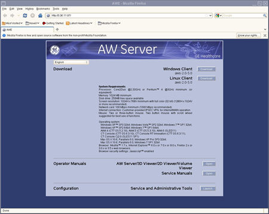
Click the “Linux Client” Download button.
Select “Save File”.
Illustration 2: Opening AWE - solo-install.rpm
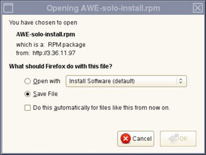
Confirm that “root” is selected as Save in folder and click the “Save” button.
Illustration 3: File Name Entering
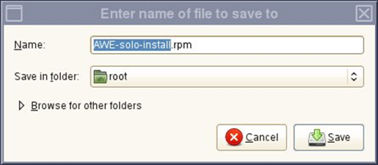
When download is completed, the following window appears. Close this window.
Illustration 4: Download completed window
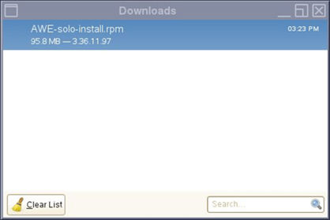
Close the AW Server Download screen.
Open a Unix shell and login as root.
Type: su-[ENTER]
Type the root password and press [ENTER]
Type the following:
/usr/g/scripts/InstallAWSClientOnConsole
After the Client software installation, the "Configure AW Server Client" window appears automatically.
Input the AW Server IP Address, User Name and Password and click Accept.
Illustration 5: Configure AW Server Client
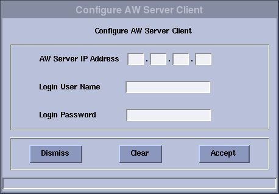
Confirm that “AWS client software installation is finished” message appears in Unix shell.
Reboot the System. Select [Shutdown] on the Desktop and select [Restart], then [OK] on the Attention Window.
Declare AWS on the CT System.
On CT Console, select [ImageWorks] ->[Network] ->[Remote Hosts], enter the required Parameters and select save.
On AW Server, enter service tool, select [Initial configuration] -> [Integration], select Basic front end integration (3rdPartyIntegration) as Integration enabler. Input License key and Click [Apply]. refer to Illustration 6.
Illustration 6: Initial configuration
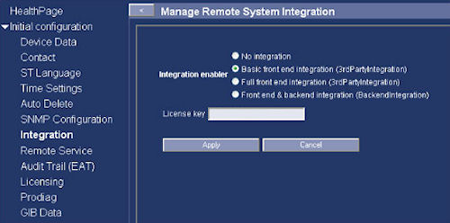
Declare CT on AW Server,
The CT system must be declared in AW server as a DICOM host. Refer to AW server installation manual for the detailed configuration procedure.
Open ImageWorks desktop Browser.
| NOTE: | Before launching the AW server application, the selected exam and series in the console exam list needs to be transferred to AW server. |
Confirm that "Applications" button exists on Image works browser and can launch the AW server from CT Console by clicking the “Application” button.
Illustration 7: Desktop Browser
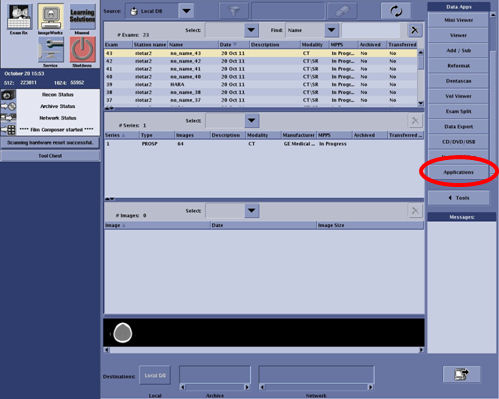
Execute the System State Save to save the AWS Configuration.
| NOTE: | The following procedure is required when AW Server is upgraded and new AWS client software needs to be re-installed. |
Open a Unix shell.
Login as root and enter the proper password.
Type: su-[ENTER]
Type the root password and press [ENTER]
In the Unix shell, type the following:
/usr/g/scripts/UninstallAWSClientOnConsole
Download and install the new AWS Client software according to Section 4.2.
Shutdown and restart the system.
This Connection is Untrusted” window may appear when accessing the Service Tools Launch button in the AW Server Utilities menu for the first time after AW Server Client installation. Disable the security setting according to the follow procedure.
Open AW Server client from Applications menu in the ImageWorks.
On the client, select “Tools” tab to show tools menu.
Click “Launch” to open web browser to access administrative and service tools.
Illustration 8: AW Server Utilities
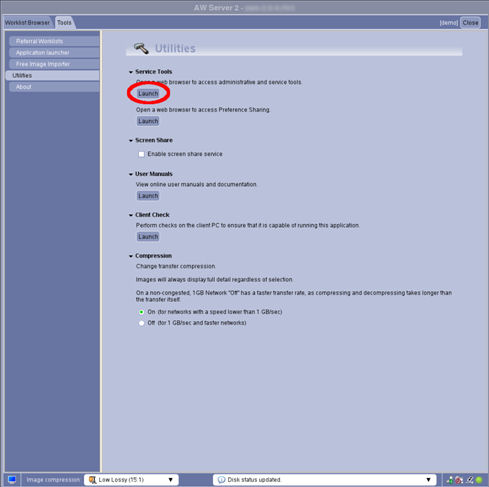
“This Connection is Untrusted” page appears in Mozilla Firefox web browser. Click “I Understand the Risks” link.
Illustration 9: Untrusted Connection
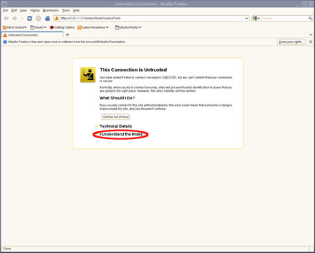
On the web browser click “Add Exception...” button.
Illustration 10: Untrusted Connection - Add Exception
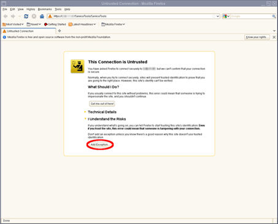
“Add Security Exception” pop-up window appears. Click the “Confirm Security Exception” button.
Illustration 11: Security Exception
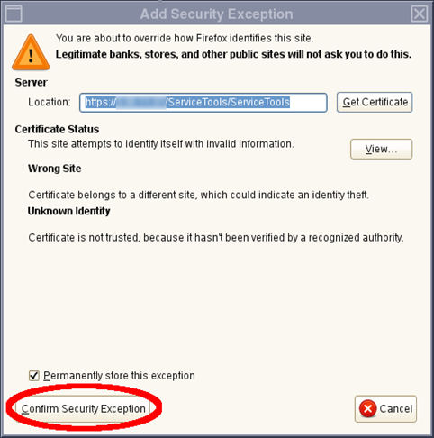
The pop up closed and “This Connection is Untrusted” page will not appear from next time.